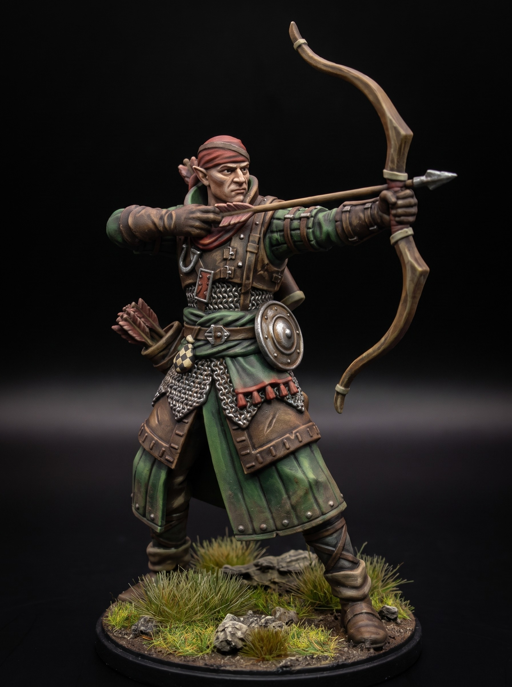

Relic Guard Paladin Greatsword Mini
August 02, 2026

The Relic Guard do not sleep. Their armor came from melted sanctuary bells. Each plate carries the carved names of dead captains. The iron remembers every breach it ever filled.
They carry massive executioner blades into battle. These swords lack keen edges. Heavy blunt force breaks iron shields and snaps wyvern spines. Wise warriors do not parry a slab blade. They step aside or die.
When a guard falls, its soul binds directly to the plate. A new squire dons the suit. The steel forces the recruit into the old master's stance. The order never recruits new blood. It recycles old bone.
Bury the dead deep after the battle. Unattended armor walks before sunrise. It always marches toward the nearest war.
Get free miniatures:
- Fantasy: https://cults3d.com/@BattleFoundry
- Scifi: https://cults3d.com/@BATTLEFOUNDRYSCIFI
- Grimdark: https://cults3d.com/@DREADWORKS
- Resin Statue: https://cults3d.com/@BlacksiteSyndicate